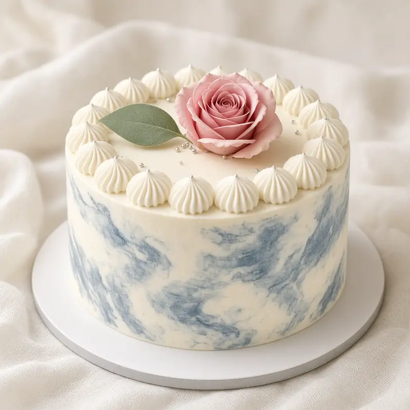

Custom Celebration Cakes in Cebu
Signature Marble and fully custom designs, baked for your date.

Custom celebration cakes and our Signature Marble are mixed and piped for the calendar day you send us — not pulled from a case. Signature Marble is a 6-inch ivory cake with dusty-blue marbling, a shell border, and one rose. Fully custom work follows your brief and reference photos within what hand-piped buttercream can do.
Signature Marble
The marble cake belongs at the centre of a small table: birthdays, family dinners, and celebrations where everyone shares one centerpiece. There is room on top for a name or a short line. If you need more servings, tell us the guest count — we will say whether an 8-inch date is possible on the bench.
Custom designs
Upload a photo on the order form or WhatsApp. Tell us the mood, palette, and words on the cake. We pipe by hand; printed sheets and fondant sculpture are not what we do. We reply within 24 hours with a yes, a question, or an honest no.
Flavours and timeline
Chocolate, vanilla, ube, mango, or red velvet. Weddings and multi-tier enquiries should be earlier than three days when possible — message us with the date and venue so we can tell you what the bench allows.
Pickup and metro delivery
No street address is published; pickup time is agreed in confirmation. Delivery to Cebu City, Mandaue, and Lapu-Lapu needs a receiver at the door.
What to send for a custom brief
Guest count, event time, indoor or outdoor venue, palette, and a photo if you have one. We pipe in buttercream — fondant figures, heavy toppers, and edible print sheets are not our bench. We will say no in reply rather than deliver something we cannot finish properly.
Flavour pairings
Ube and mango read Filipino and festive; chocolate and vanilla stay neutral for mixed tables; red velvet suits a bold palette. Choosing a flavor is the longer guide if you are undecided.